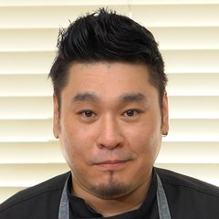

365일 다녀도 부족한 맛집
반백 년, 2~3대째 대를 잇는 노포부터 추억의 대전역 가락국수, 젊은 입맛에 맞춘 트렌디한 면 요리까지. 대전에는 이름만 대면 아는 면 맛집이 셀 수 없이 많습니다.
대전 곳곳의 면 맛집과 면 요리 문화를 한자리에 모은 미식 축제입니다. 맛있는 한 그릇을 찾아 전국을 누비는 면 마니아라면 놓칠 수 없어요.
반백 년, 2~3대째 대를 잇는 노포부터 추억의 대전역 가락국수, 젊은 입맛에 맞춘 트렌디한 면 요리까지. 대전에는 이름만 대면 아는 면 맛집이 셀 수 없이 많습니다.
먹거리 부스 30곳을 돌며 맛보고, 스타 셰프의 쿠킹쇼와 누들마스터 경연을 보고, 수제 젓가락·누들컵 만들기 체험까지. 가족·친구 누구와 와도 하루가 꽉 찹니다.
올해로 네 번째를 맞은 누들대전축제는 면 한 가닥으로 전국의 미식 여행자를 잇고, 특별하고 재미있는 여행길을 선물합니다.
철길이 만나는 도시에 밀가루가 모였고, 밀가루는 국수가 되었습니다.
일제강점기
대전은 경부선과 호남선 철도가 교차하는 지점의 배후 도시로 성장했습니다.
전후 구호 시기
미국의 구호물자인 밀가루가 철도로 운송되며 대전에 모였고, 밀가루로 만든 면 요리가 자연스럽게 퍼졌습니다.
1971. 03
밀가루 포대를 가득 실은 우마차가 대전 도심을 지나던 풍경이 대전일보 사진으로 남아 있습니다.
오늘
대전역 가락국수의 추억, 2~3대를 잇는 칼국수 노포, 새로운 스타일의 면집이 함께 대전의 맛을 만들고 있습니다.
역사 자료 출처: 누들대전축제 공식 홈페이지, 사진 출처 대전일보
대전을 대표하는 면 요리는 단연 칼국수와 가락국수입니다. 축제에서는 두 대표 메뉴를 중심으로 전국과 세계의 다양한 면 요리를 함께 맛볼 수 있어요.
대전 대표 면 ①
반죽을 밀어 칼로 숭덩숭덩 썰어낸 넓적한 면발에 진한 국물을 부어 내는 한 그릇. 대전에는 대를 이어 칼국수를 끓여온 노포가 골목마다 있을 만큼 사랑받는 메뉴입니다. 국물 맛도 가게마다 달라서 골라 먹는 재미가 있어요.
대전 대표 면 ②
대전역 플랫폼에서 기차가 잠시 멈춘 사이 후루룩 먹고 다시 올라타던 추억의 그 맛. 통통한 면발에 따끈한 멸치 국물, 유부와 쑥갓을 올린 소박한 한 그릇입니다. 축제의 '추억의 누들여행'에서 그 시절 역전 분위기를 다시 만나보세요.
젊은 입맛에 맞춘 트렌디한 면 요리부터 세계의 누들까지, 면이라면 무엇이든 만날 수 있어요.
축제의 하이라이트. 최고의 면 요리 실력자를 가리는 경연입니다.
하루 한 명, 스타 셰프가 무대에서 선보이는 면 요리 쇼.
보고, 듣고, 맛보며 면을 오감으로 즐기는 무대 프로그램.
지역 청년 아티스트들이 축제 분위기를 채우는 라이브 공연.
옛 대전역 가락국수를 회상하며 추억을 함께 나누는 테마 공간.
누들네컷, 누들컵·수제 젓가락 만들기 등 아이도 어른도 즐기는 체험 10종.
누들 로드를 누비고, 먹고, 찍고! 축제 기간 3일 내내 누들주제관에서 참여할 수 있습니다.
날짜를 고르면 메인무대 순서와 하루 종일 즐길 수 있는 체험이 한눈에 보여요. 금요일은 오후 4시, 토·일요일은 낮 12시에 문을 열고, 매일 밤 9시에 마감합니다.
11.13 금 · 19:00
축제 첫날 밤, 메인무대에서 면 요리 쿠킹쇼로 누들대전의 문을 엽니다.

11.14 토 · 18:00
가장 붐비는 토요일 저녁, 눈앞에서 완성되는 면 요리 쿠킹쇼를 선보입니다.
프로그램 시간과 출연진은 현장 사정에 따라 바뀔 수 있습니다.
대표 메뉴 한 그릇에, 곁들일 메뉴까지. 종류별로 골라 보고 오늘 먹을 면을 미리 정해 두세요. 부스 번호는 배치도의 구역 번호와 같아요.
실습용 가상 부스 목록입니다.
정문으로 들어오면 가운데에 취식 테이블이 있고, 메인무대를 중심으로 먹거리존 A~E가 둘러싸고 있어요. 체험은 물빛광장, 이벤트는 누들주제관에서 진행됩니다.
배치도는 옆으로 밀어서 볼 수 있어요.
실습용 가상 배치도입니다.
행사장은 서대전네거리 바로 옆 서대전시민광장이에요. 도시철도 1호선 서대전네거리역에서 가깝고, 축제 기간에만 운행하는 누들버스를 타면 광장 앞에서 바로 내릴 수 있어요.
누들 1대전역 출발
누들 2유성온천역 출발
누들버스는 축제 운영 시간 30분 전부터 마감 30분 후까지 운행합니다 (금 15:30–21:30, 토·일 11:30–21:30). 실습용 가상 노선입니다.